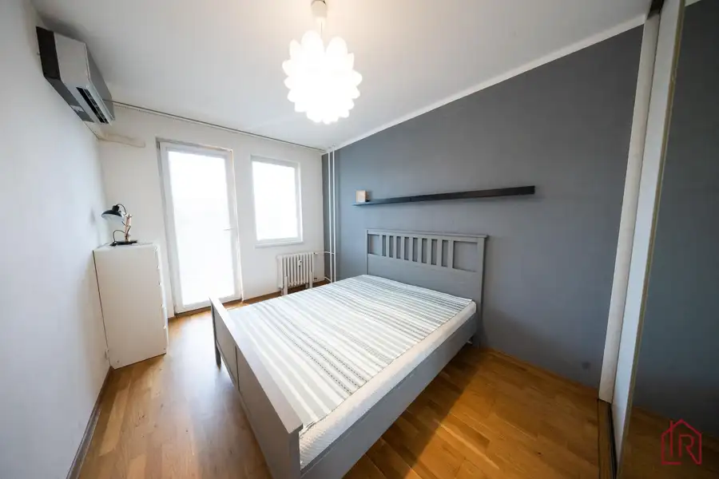
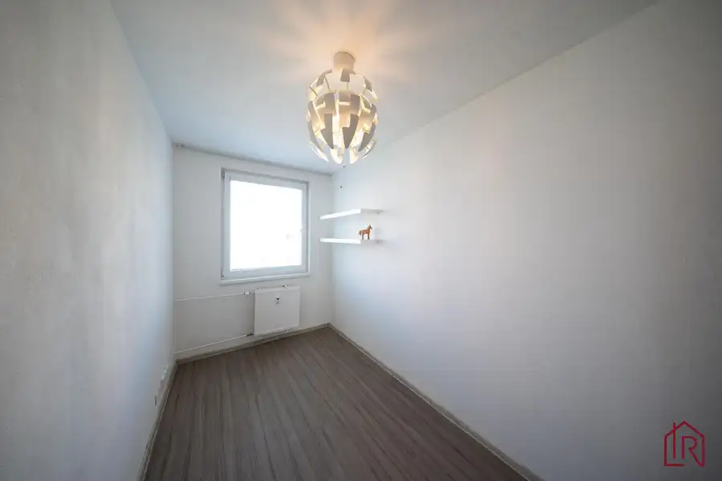
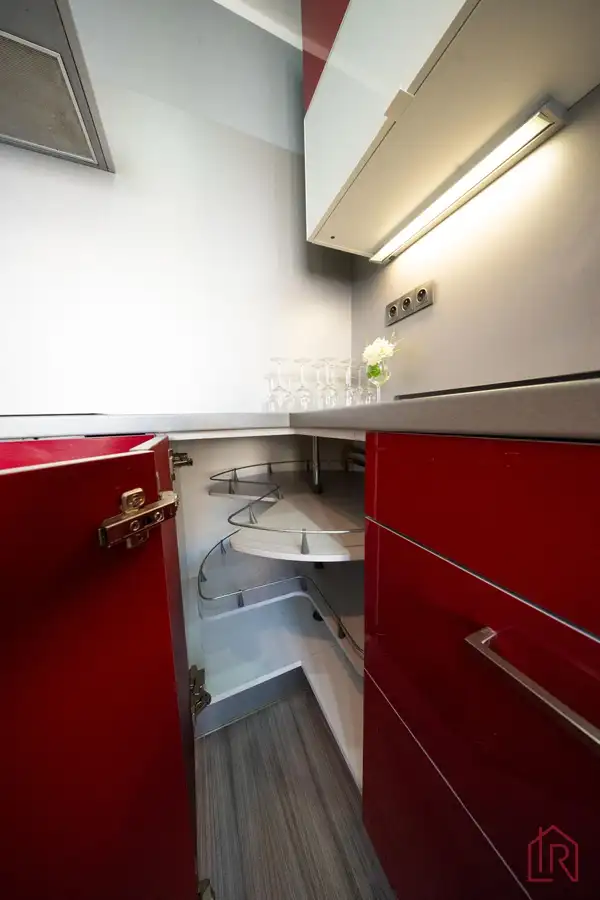
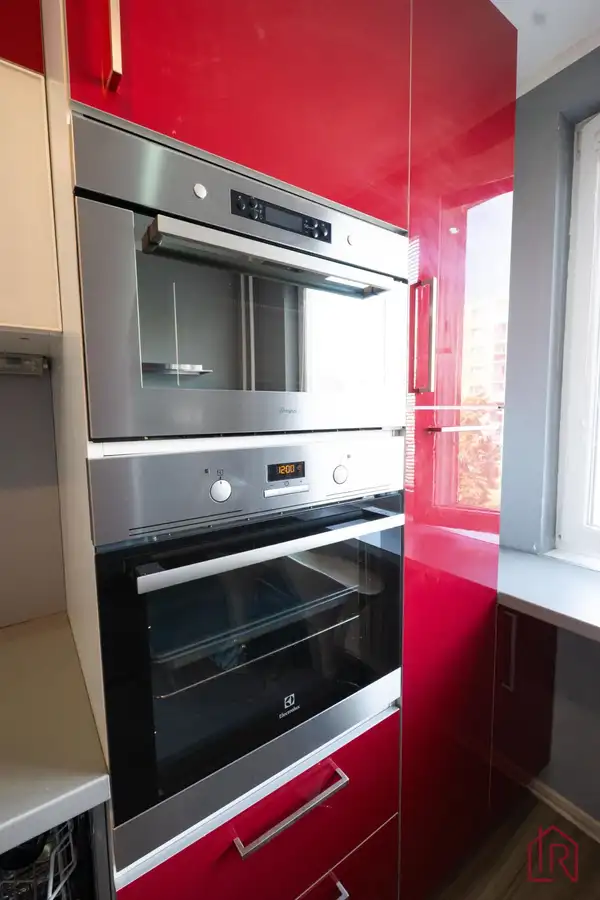
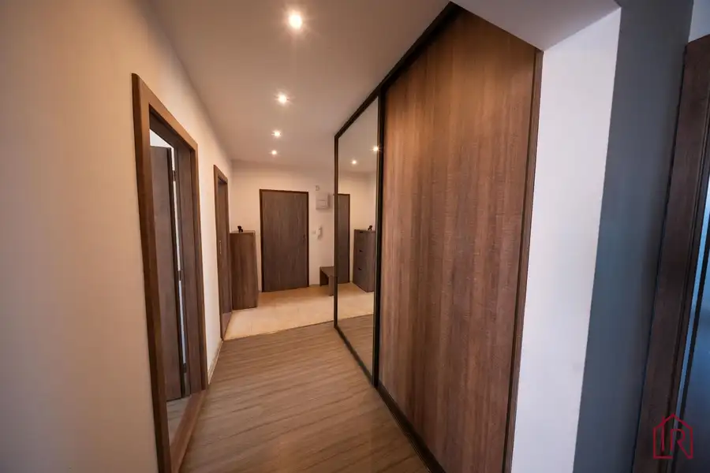

4 - izbový byt, Košice Terasa, Bernolákova, 82 m²
Západ, Košice






- Dispozícia4-izbový
- Plocha78 m²
- Poschodie3. z 8
- Stavpo rekonštrukcii
- Vlastníctvoosobné
O nehnuteľnosti
Impulz Real a Lucia Talianová ponúkajú exkluzívne na predaj priestranný 4‑izbový byt s loggiou a pivnicou na správnej adrese.
Táto nehnuteľnosť spája komfort rodinného bývania s výhodami výbornej lokality.
Predstavte si bývanie, kde máte všetko na dosah.
V pešej dostupnosti nájdete školy, škôlky, obchody, zdravotnú starostlivosť, veterina, zastávky MHD, možnosti na šport ako aj centrum voľného času. Výborná infraštruktúra znamená viac času pre rodinu, menej stresu z každodenného dochádzania a vyššiu hodnotu vašej investície.
BYT – ZÁKLADNÉ INFORMÁCIE
celková výmera: 82 m²
podlahová plocha: 78 m²
loggia: 4 m²
dispozícia: 4 izby
orientácia: juhozápad
poschodie: 3/8
Byt má praktickú a funkčnú dispozíciu, ktorá poskytuje dostatok priestoru pre komfortné rodinné bývanie. Vďaka juhozápadnej orientácii je byt príjemne presvetlený počas celého dňa.
STAV A VYBAVENIE BYTU
-rekonštrukcia bytu
-kompletná výmena elektroinštalácie
-dátové (internetové) rozvody v každej miestnosti
-murované bytové jadro
-kuchynská linka je vyhotovená z kvalitných a trvácnych materiálov,
doplnená o premyslený a kvalitný systém vnútorného členenia skriniek, ktorý zabezpečuje maximálne praktické využitie úložného priestoru.
-drevené podlahy v obývačke a spálni
-precízne spracované interiérové dvere s obložkovými zárubňami
-klimatizácia pre vyšší komfort bývania
-fólie na oknách - západná strana
-bezpečnostné vchodové dvere
BYTOVÝ DOM
-výťah
-optický internet
-kočikáreň
-pivnice
LOKALITA
- sídlisko Terasa - lokalita ponúka kompletnú občiansku vybavenosť v pešej dostupnosti:
základné a stredné školy
materská škola
obchodné centrum
zdravotné stredisko
veľkou výhodou je vysoký podiel zelene a pokojné prostredie
DOPRAVNÁ DOSTUPNOSŤ
-výborné napojenie na hlavné dopravné ťahy
-rýchla dostupnosť do centra mesta aj priemyselných zón
PREČO TENTO BYT?
Tento byt predstavuje spojenie priestoru, komfortu a výbornej polohy a je vhodný nielen na vlastné bývanie pre rodiny, ktoré potrebujú dostatok priestoru na pohodlný život, ale je aj ideálnym riešením pre mladé páry, ktoré plánujú rozšírenie rodiny, alebo pre aktívnych single s fitnes kútikom alebo ateliér na svoje záľuby či relax, no môže byť aj ako stabilná investičná príležitosť.
Interaktívny pôdorys nájdete na tejto stránke:
https://floorplanner.com/projects//spaceplanner
Pre bližšie informácie kontaktujte kedykoľvek certifikovaného rodinného realitného makléra: Lucia Talianová, , (certifikovaný maklér NARKS - Národná asociácia realitných kancelárií Slovenska).
"VŠETKO POD JEDNOU STRECHOU", zabezpečenie právnych služieb advokátom, služby financovania, protokolárne odovzdanie nehnuteľnosti + elektrárne, plyn a 100% servis aj v budúcnosti so spoľahlivým tímom čestných a kvalifikovaných ľudí s dlhoročnými skúsenosťami. S nadhľadom profesionálnych skúseností, s maximálnym rešpektovaním Vašich potrieb, žijeme s vami Vaše realitné rozhodnutia akoby boli naše vlastné.
Spoločnosť Impulz Real - Vaša rodinná realitka , ktorej DÔVERUJETE.
Parametre
- Celková rozloha
- 82 m²
- Úžitková plocha
- 78 m²
- Poschodie
- 3/vyššie poschodie
- Počet poschodí
- 8
- Počet izieb
- 4
- Vlastníctvo
- osobné
- Stav
- po rekonštrukcii
- Status
- aktívne
- Odvoz odpadu
- áno
- Plyn
- nie
- Internet
- optika
- Kúpeľňa
- sprchovací kút
- Vykurovanie
- spoločné
- Balkón
- nie
- Lódžia
- áno
- Terasa
- nie
- Pivnica
- áno
- Garáž
- nie
- Výťah
- áno
- Parkovanie
- verejné
- Postavené z
- panel
- Zariadenie
- čiastočne
- Zateplený objekt
- nie
- Krb
- nie
- Klimatizácia
- áno
- Energetický certifikát
- nie
- Predzáhradka
- nie
- Bezbariérový prístup
- nie
- Okná
- plastové
- Orientácia
- sever/juh
- Dátum zverejnenia
- 2026-07-02
Kde to je
Mohlo by Vás zaujímať
 ZáhradyNové
75 000 €: Záhrada s chatkou, Košice – Krásna, 716 m², elektrina
mestská časť Krásna, Košice
716 m²
ZáhradyNové
75 000 €: Záhrada s chatkou, Košice – Krásna, 716 m², elektrina
mestská časť Krásna, Košice
716 m²
 Rodinné domyNové
245 000 €Rezervované, Celoročné bývanie pri Košiciach, pozemok 901 m2
Okolie
4-izbový150 m²
Rodinné domyNové
245 000 €Rezervované, Celoročné bývanie pri Košiciach, pozemok 901 m2
Okolie
4-izbový150 m²
 Nebytové priestoryNové
150 000 €: Investičný priestor, Lorinčík, 4,3 % výnos
mestská časť Lorinčík, Košice
52.23 m²
Nebytové priestoryNové
150 000 €: Investičný priestor, Lorinčík, 4,3 % výnos
mestská časť Lorinčík, Košice
52.23 m²